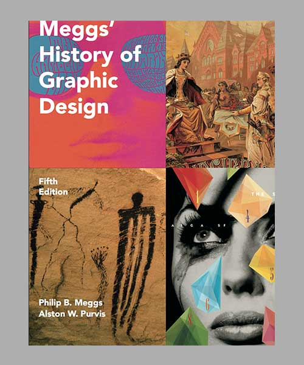
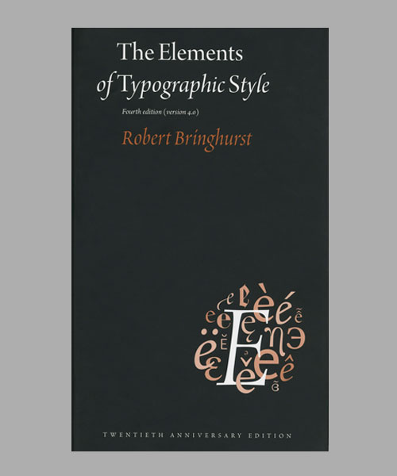
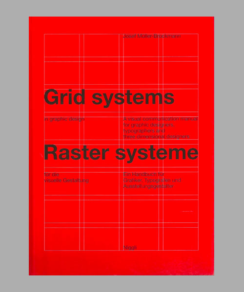

这个书单也提醒我把这些书收藏在方便可取之处，常翻常新。可惜的是，目前几乎还没有中文版本翻译出来。
这个页面也会随着我的阅读而时常更新。


作者：Robert Bringhurst
这本书是在字体排版方面的权威，是从事设计，字体及排版人员的非常有操作性的手册，也是文字优美，发人思考，设计师值得收藏的案头书。内容非常详实，字体，字型，页面排版，设计哲学，基本规则等等，都以一个非常清晰的脉络呈现出来，Hermann Zapf曾说过他希望这本书能成为字体领域的圣经，对于作家，出版者，设计师及编辑来说，这本书都是一个宝库，让我们对于文字有更深入的思考。用作者Robert Bringhurst的话来说，字体排版对于文字的重要性就好像音乐和乐谱的关系。
